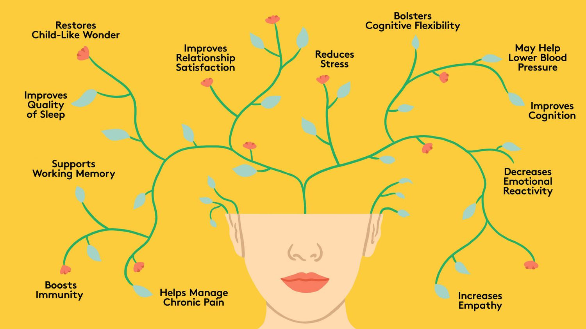
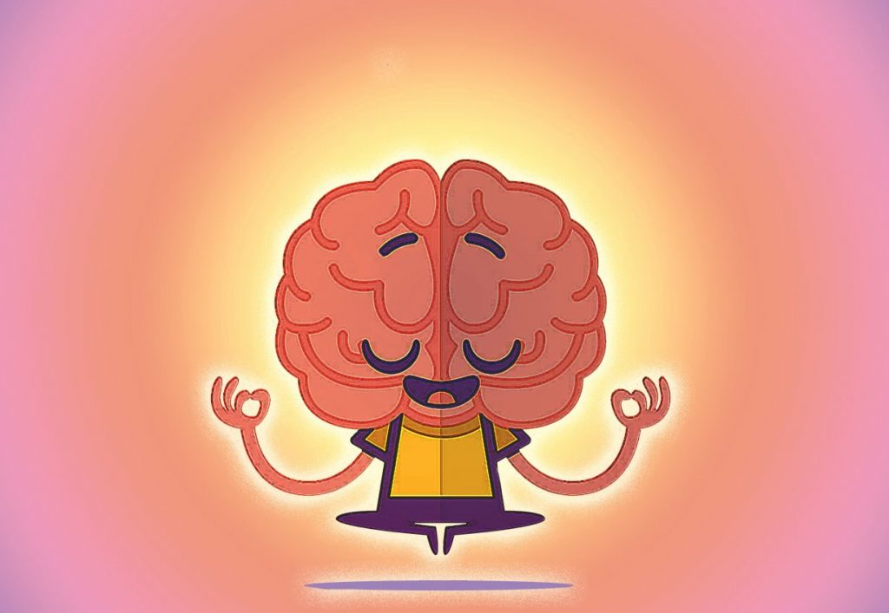

Transformation Through Mindfulness and Meditation

In the age of self-help and mental health treatments, there is no better place to start than the base of operations for the conscious mind—the brain. A substantial amount of medications and practices such as therapy and thought exercises have been made available to those struggling with everyday life and mental ailments of all varieties. These forms of support have their place and value, but so do two ancient methods of evolving one’s brain and mind which anyone can implement. Those are the powerful practices of mindfulness and meditation. David Vago, an esteemed neuroscientist, discusses the benefits and science behind mindfulness and meditation in an InsightTimer article, Mindfulness For Self-Transformation - A Cognitive Neuroscientist Explains.
Mindfulness and its Benefits
David Vago dives into the biological processes of the brain during each moment of existence and how each consecutive moment forms our self-image and identity, leading us to our decision-making and overall quality of life. The majority of these biological processes occur at the subconscious level of the mind. Mindfulness comes in at the conscious level of being and can be interpreted as awareness. In practicing mindfulness one becomes aware of their thought patterns and where their attention is actively placed.
The ego is often thought of as the individual mind which creates a narrative of who we think we are, from the story of our life we tell ourselves. Mindfulness is the conscious act of separating oneself from the mind and the thoughts the brain produces. Mindfulness is becoming the observer. It is the realization that you are not your thoughts but instead the observer of them. In practicing mindfulness we can view our thoughts objectively and learn not to identify with them, resulting in the skill of letting thoughts and the emotions that they produce come and go without incessant rumination. Focusing one’s attention on troubling or impulsive ideas can be damaging to mental health, peace of mind, decision-making, and the physical body.
Vago discusses the negative impact that anxiety, depression, and anger have on an individual’s health. These emotional conditions may be normal to some extent but they become increasingly damaging the more one obsesses over and focuses on the thoughts and beliefs that create these states of being. This is a result of the mind-body connection; every thought affects our physiological state. These negative emotional states can increase one’s risk for heart attack, affect the intensity of chronic illnesses, and negatively affect the immune system. Practicing mindfulness empowers one to observe negative thought patterns and the stimuli that produce them, separate their identity from the thoughts themselves, briefly experience the emotions they produce, and then let the thoughts and the emotions pass. It is an act of recognizing negative thought patterns when they arise, pausing, and putting a potential spiral of negativity to a halt. This will reduce the impact negative notions have on one’s health and will grant a more tranquil mind, allowing one to enjoy life and focus on goal-oriented tasks without breaks in concentration or clarity.
A group of women who were afflicted with fibromyalgia, a disorder that involves chronic musculoskeletal pain along with fatigue, underwent mindfulness training in a study led by Vago. Mindfulness was used to combat the anxious thoughts the participants held about their disorder. As opposed to the control group, the women who underwent the training had a decrease in symptoms associated with fibromyalgia. They also exhibited less avoidance of words associated with the disorder at the conscious and subconscious levels of the mind. The participants, with the help of mindfulness, were changing their brains and how they reacted to their disorder. The experimental group was able to process pain-related words and then let the associated emotions pass, allowing them to complete the tasks given to them with more clarity. These women underwent a mental and physical transformation regarding their affliction.
Meditation and the Brain
The mental benefits of meditation are widely known and continue to receive attention and research. There are numerous meditation practices and they are all beneficial to mental health and the preservation of different areas of the brain. Meditation and mindfulness are intimately correlated. In several forms of meditation, the volume of one’s thoughts is turned down and conscious awareness is turned up; attention on the breath, the body, and one’s surroundings is often the focus of meditation. The goal is ultimately to let thoughts and the analytical mind subside. As notions arise they are to be let go and one’s attention is returned to the focus of the meditation. This is essentially the practice of mindfulness and it assists in controlling what ideas and beliefs one gives attention to daily.
According to Vago, the three regions of the brain responsible for awareness are referred to as the frontal-parietal control network, and they shrink in size after age 20. Studies show that meditation increases activity in these areas of the brain as well as reduces the amount they shrink over time. Therefore, meditation actively affects brain structure and increases the ability to consciously control one’s mind and perception of reality. The ability of the brain to change and wire new neural networks, as well as unwire them, via synaptic connections formed through experiences, learning, and sensory information is known as neuroplasticity. The discovery of neuroplasticity has motivated millions to explore the possibilities of mindfulness and meditation for a happier and healthier mind and body.
Neuroplasticity and Positivity
Neuroplasticity is a double-edged sword. It can work for you or against you. Negative experiences and thought patterns wire your brain to be suppressed. Mindfulness and meditation are tools that can inhibit the excessive firing and wiring of neural networks that promote anxiety, fear, depression, and discouragement. They can also be used, along with positivity, to wire and fire neural networks towards love, acceptance, confidence, and gratitude. Dr. Rick Hansen, author of Hardwiring Happiness, discusses How to Grow the Good in Your Brain by directing mental activity towards positive sensations. Hansen outlines a detailed process for enriching the present moment with pleasant emotions, effectively wiring the brain toward positivity.
The theory that the human brain is hardwired and chained to a fixed disposition, determined by genes, has been put to rest by modern neuroscience. The ancient techniques of meditation and mindfulness, historically practiced by Buddhist monks, spiritual mystics, and Zen masters, have finally gained popularity and scientific interest. The science doesn’t lie and the benefits and transformative power of these practices can not be denied.
This is inspiring news to everyone who feels as if they are trapped in a cage match with their relentless thoughts of hopelessness, worry, negativity, and doom. The proper tools to shatter the mental chains of suppression are now available to all who wish to be transformed and freed from the weight of their troubled thoughts. This is conscious evolution in action. Mindfulness and meditation are mental weapons that anyone can utilize in the battle for peace of mind and happiness. One may not be able to exert direct control over the events of their life, but I believe the age of the victim mentality may be slipping into the past as the world consciously realizes we do have control over our reaction to the chaos that may arise, allowing for a sense of peace and control to be maintained.
The reality of neuroplasticity reveals that every moment is an opportunity to mold our brain toward hope, gratitude, and contentment. It would be wise to take advantage of mindfulness and meditation to gear the brain toward positive neural networks. Regardless of one’s conscious effort, neuroplasticity remains in effect and the brain could easily be wired towards a negative experience if one remains unconscious of their thought patterns. Instead of having our environment adversely affect our brain and mind, we have an opportunity to wire our brains and minds to perceive our environment in an optimistic light. As the inspiring Bob Marley wrote, “Emancipate yourselves from mental slavery. None but ourselves can free our minds.”